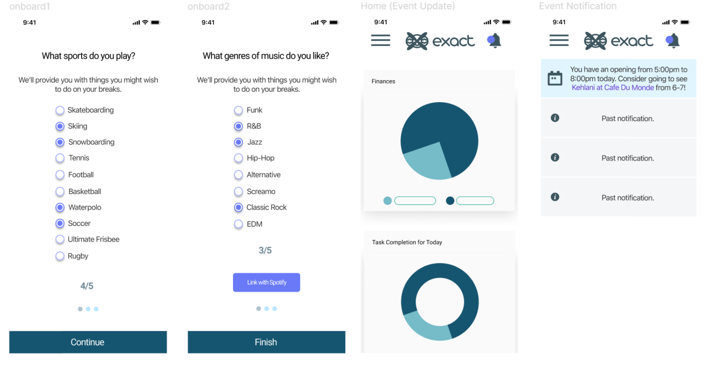
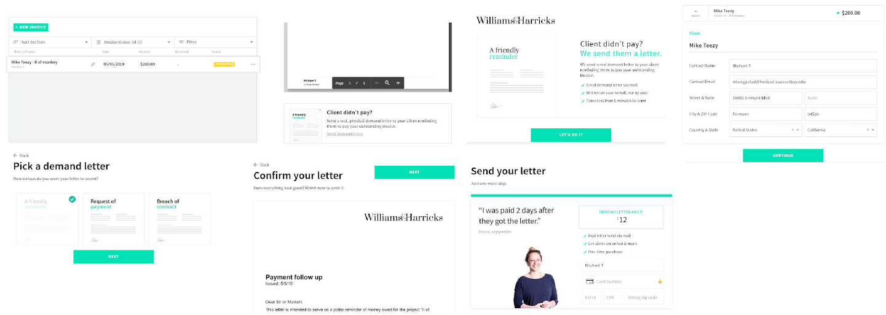
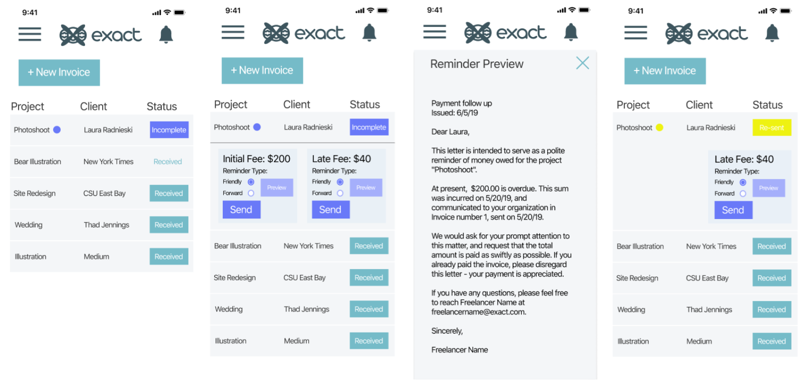

Exact
Freelancer Dashboard
Background
I was tasked with developing a business management dashboard for freelancers in the span of 3 weeks. In a group of three, I served as the lead visual designer. We sought to see where problems currently lie in managing life as a freelancer and find solutions.
Research
We started with downloading several business management dashboards + testing freelancer management websites to understand how their processes functioned. We also looked at general statistics and information on freelancers. Concurrently, interviews were conducted with 3 different freelancers trying to understand how they currently manage their jobs.
We decided to harness the main frustrations of two of the individuals we interviewed and work on solving each one.
Problems (based primarily on interviews):
Competitive Analysis Findings:
Based on interviewee 2, we looked closely at the varied frameworks for sending out late invoices / notices of non-payment. Many platforms did not account for this feature that we surveyed, apart from And.Co.
Solutions
For the initial interviewee, we implemented a feature that took a user’s weekly schedule and looked for gaps in time. This feature would make suggestions about events the user may consider going to have a bit of fun to balance out their stress. This would be done prior to an onboarding process that would take inventory of their interests to make personalized event selections.
Our way of using onboarding to find events for freelancer to potentially attend.
For the second interviewee, we took the current framework of And.Co’s way of sending out late notices and invoices, and made it more streamlined. Currently, it requires a significant amount of clicks and various pages to go through this process. The method we developed allows for a minimal amount of clicks, and also the ability to test different types of notices without having to leave the current page.
And.Co's process of sending out a demand letter.

Exact's expedited method.
Takeaways
Assessment of Problem Space:
We essentially took a problem from each interviewee and ideated on what could be done about it. This approach was a bit shallow. In retrospect, I think we could have gone in depth on one of these problems instead and taken a more in depth look at that problem space to develop a more thorough solution.
Understanding UI standards:
Using figma’s live prototype testing features, I quickly realized that my early wireframes did not account for finger space well on certain devices. This project helped me take this more keenly into consideration.